En 2019, on compte 1153 logements inscrits sur la plateforme Airbnb à issy, ce qui représente environ 3.2% de la totalité du marché du logement dans la commune1. A titre de comparaison, on compte 848 chambres d’hôtel dans la commune2. 779 des logements Airbnb ont été proposés à la location au moins une fois sur l’année, et 598 ont enregistré au moins une réservation. Un hôte qui rend son logement disponible a donc 77% de chance d’engendrer une réservation. Les indicateurs calculés sur le tableau suivant prennent comme stock de référence ces 598 logements réservés, dont 485 sont des logements entiers, et 104 des chambres privées.
| Indicateur ( 2019 ) | Tous les logements | Logements entiers | Chambres privées |
|---|---|---|---|
| Taux d’activité (%)a | 77 | 78 | 72 |
| Prix par personne moyen ($) | 35 | 34 | 36 |
| Taux de fréquentation moyen (%) | 55 | 58 | 44 |
| Nombre moyen de nuitées disponibles | 141 | 139 | 157 |
| Nombre moyen de nuitées réservées | 78 | 80 | 69 |
| Part de logements loués fréquemment (>= 120 nuitées) | 24 | 25 | 24 |
| Part de logements loués occasionnellement (<= 7 nuitées) | 11 | 10 | 18 |
| Part des séjours de moins de 7 jours | 76 | 76 | 79 |
| Part des séjours de 15 jours ou plus | 7 | 7 | 9 |
| Part de logements détenus par des multiloueurs | 26 | 21 | 50 |
| Revenu médian engendré par logement ($) | 4092 | 5221 | 2222 |
| a Le taux d’activité désigne le nombre de logements réservés par rapport au nombre de logements actifs |
Les nuitées sont assez concentrées dans un petit nombre de logements : en effet, 20% des logements concentrent 52% des nuitées réservées de la commune. Lorsque l’on s’intéresse aux revenus engrangés, on observe que 20% des logements concentrent près des 61% de la totalité des revenus générés par Airbnb en 2019 à issy.
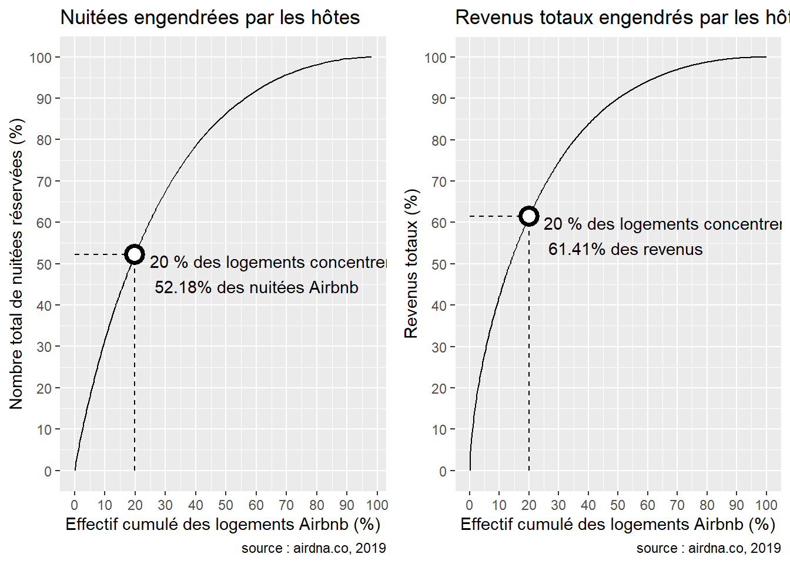
| Rang | Revenus en 2019 ($) | Nombre de logements |
|---|---|---|
| 1 | 284987 | 5 |
| 2 | 95129 | 3 |
| 3 | 88103 | 1 |
| 4 | 74772 | 1 |
| 5 | 61765 | 1 |
En regardant les hôtes qui engrangent le plus de revenus, on trouve un multiloueur qui a lui seul près de 285000$, soit 5.84% de la totalité des revenus engendrés par le marché Airbnb à issy en 2019. Sur les 5 hôtes engrangeant le plus de revenus, 3 sont monoloueurs.
L’arrêt de l’activité du marché Airbnb à issy s’observe tout d’abord au niveau du nombre de locations réservées : entre 2019 et 2020, elles ont subi une chute de 27%, passant de 598 à 438 unités. Les courbes ci-dessus montrent un déclin du nombre de nuitées réservées à partir de mars 2020, lors de la période de restriction des déplacements. En effet, on observe une chute moyenne de 47% du taux de fréquentation par logement de 2019 à 2020 Seul 18.6% des logements ont connu une hausse du nombre de leur visites entre 2019 et 2020 Enfin, l’arrêt du tourisme se ressent au niveau des revenus : ils sont passés de près de 4900000$ en 2019 à 1800000$ en 2020.
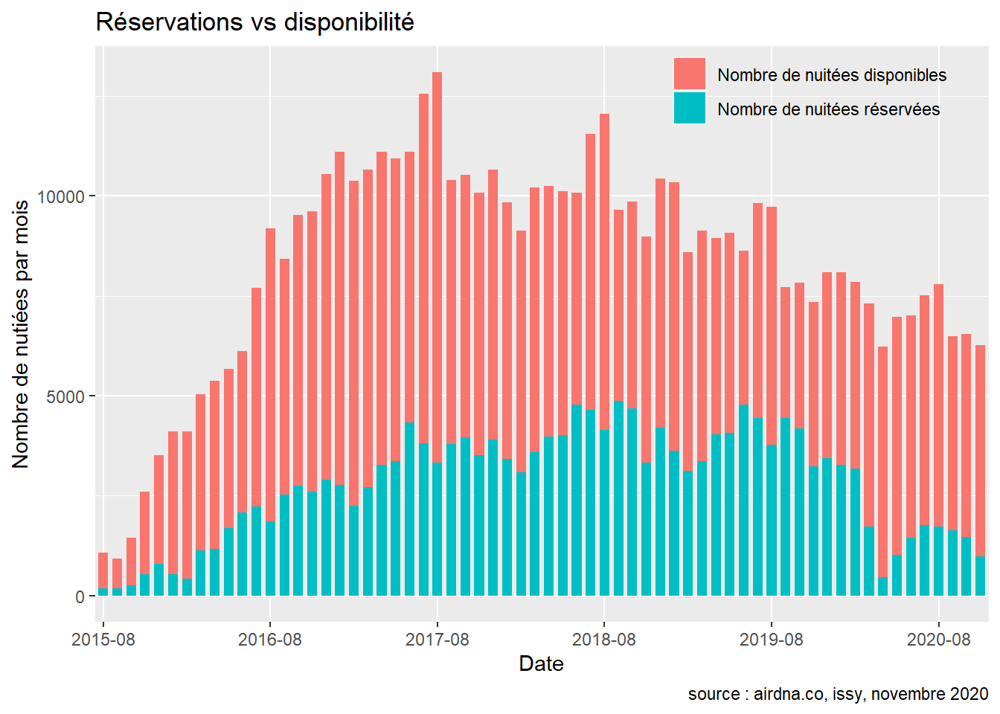
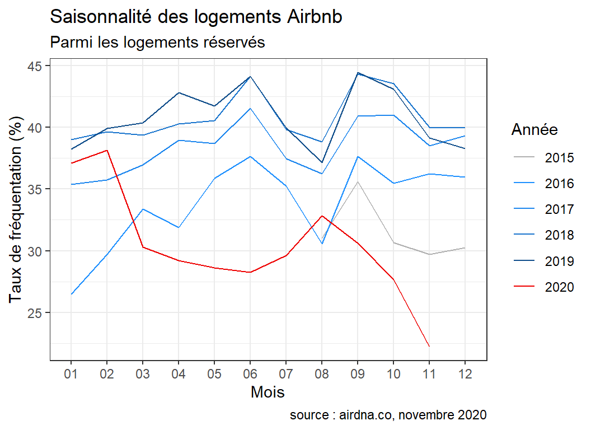
Les mois de juin et de septembre correspondent aux taux de fréquentation les plus élevés, tandis qu’août et novembre correspondent à des saisons creuses en raison du plus fort nombre de nuitées disponibles à ces périodes-là. Le comportement de l’année 2020 est complètement différent des autres années.
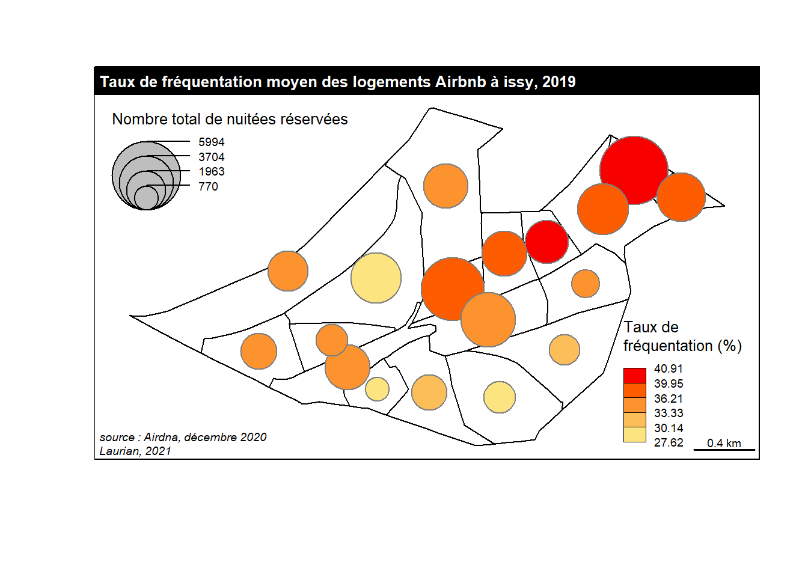
En 2019, on compte 1238 logements inscrits sur la plateforme Airbnb à Pantin, ce qui représente environ 4.7% de la totalité du marché du logement dans la commune3. A titre de comparaison, on compte 609 chambres d’hôtel dans la commune4. 898 des logements Airbnb ont été proposés à la location au moins une fois sur l’année, et 697 ont enregistré au moins une réservation. Un hôte qui rend son logement disponible a donc 78% de chance d’engendrer une réservation. Les indicateurs calculés sur le tableau suivant prennent comme stock de référence ces 697 logements réservés, dont 532 sont des logements entiers, et 155 des chambres privées.
| Indicateur ( 2019 ) | Tous les logements | Logements entiers | Chambres privées |
|---|---|---|---|
| Taux d’activité (%)a | 78 | 79 | 76 |
| Prix par personne moyen ($) | 25 | 24 | 25 |
| Taux de fréquentation moyen (%) | 57 | 61 | 50 |
| Nombre moyen de nuitées disponibles | 138 | 125 | 174 |
| Nombre moyen de nuitées réservées | 78 | 76 | 87 |
| Part de logements loués fréquemment (>= 120 nuitées) | 23 | 22 | 25 |
| Part de logements loués occasionnellement (<= 7 nuitées) | 10 | 11 | 10 |
| Part des séjours de moins de 7 jours | 70 | 68 | 74 |
| Part des séjours de 15 jours ou plus | 10 | 12 | 6 |
| Part de logements détenus par des multiloueurs | 30 | 24 | 46 |
| Revenu médian engendré par logement ($) | 3189 | 3610 | 2771 |
| a Le taux d’activité désigne le nombre de logements réservés par rapport au nombre de logements actifs |
Les nuitées sont assez concentrées dans un petit nombre de logements : en effet, 20% des logements concentrent 54% des nuitées réservées de la commune. Lorsque l’on s’intéresse aux revenus engrangés, on observe que 20% des logements concentrent près des 58% de la totalité des revenus générés par Airbnb en 2019 à Pantin.
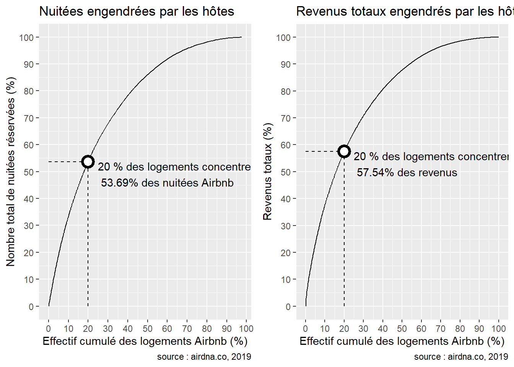
| Rang | Revenus en 2019 ($) | Nombre de logements |
|---|---|---|
| 1 | 176584 | 11 |
| 2 | 67829 | 5 |
| 3 | 53118 | 1 |
| 4 | 37056 | 1 |
| 5 | 35407 | 2 |
En regardant les hôtes qui engrangent le plus de revenus, on trouve un multiloueur qui a lui seul près de 177000$, soit 4.69% de la totalité des revenus engendrés par le marché Airbnb à Pantin en 2019. Sur les 5 hôtes engrangeant le plus de revenus, 2 sont monoloueurs.
L’arrêt de l’activité du marché Airbnb à Pantin s’observe tout d’abord au niveau du nombre de locations réservées : entre 2019 et 2020, elles ont subi une chute de 24%, passant de 697 à 529 unités. Les courbes ci-dessus montrent un déclin du nombre de nuitées réservées à partir de mars 2020, lors de la période de restriction des déplacements. En effet, on observe une chute moyenne de 19% du taux de fréquentation par logement de 2019 à 2020 Seul 16.1% des logements ont connu une hausse du nombre de leur visites entre 2019 et 2020 Enfin, l’arrêt du tourisme se ressent au niveau des revenus : ils sont passés de près de 3800000$ en 2019 à 1500000$ en 2020.
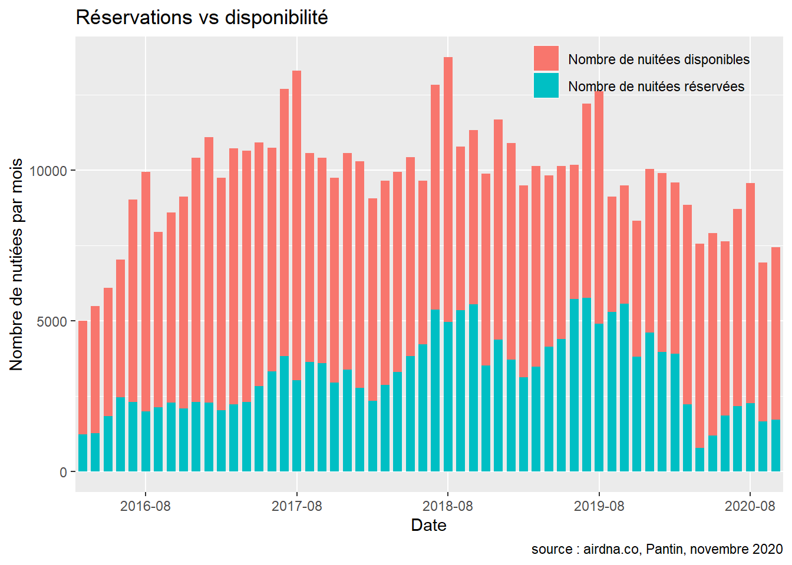
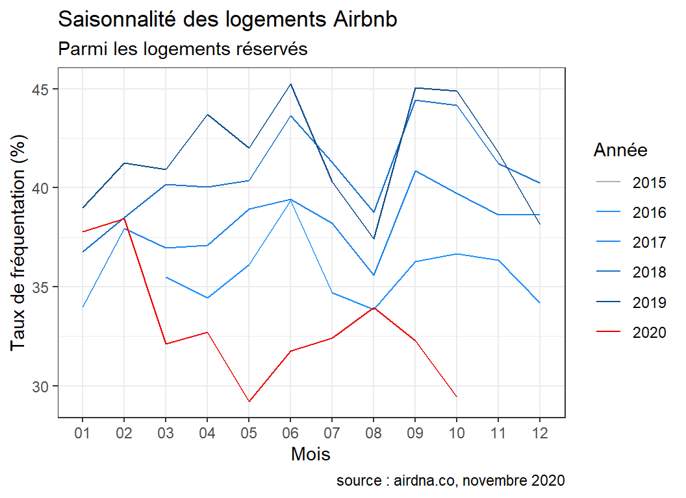
Les mois de juin et de septembre correspondent aux taux de fréquentation les plus élevés, tandis qu’août et novembre correspondent à des saisons creuses en raison du plus fort nombre de nuitées disponibles à ces périodes-là. Le comportement de l’année 2020 est complètement différent des autres années.
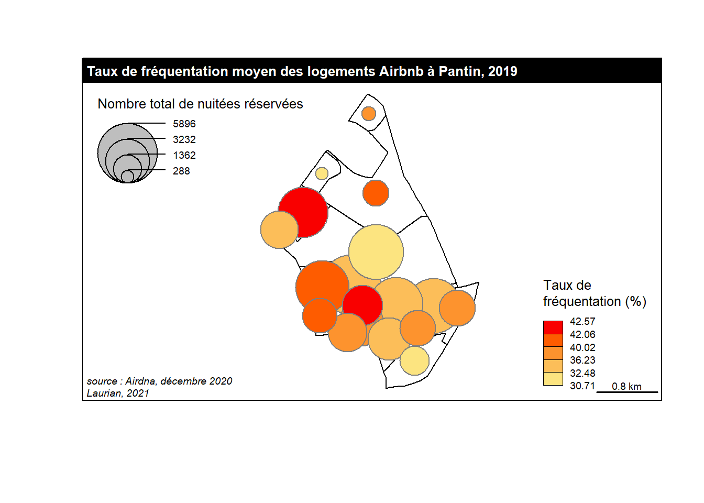
En 2019, on compte 335 logements inscrits sur la plateforme Airbnb à bagneux, ce qui représente environ 1.9% de la totalité du marché du logement dans la commune5. A titre de comparaison, on compte 47 chambres d’hôtel dans la commune6. 232 des logements Airbnb ont été proposés à la location au moins une fois sur l’année, et 179 ont enregistré au moins une réservation. Un hôte qui rend son logement disponible a donc 77% de chance d’engendrer une réservation. Les indicateurs calculés sur le tableau suivant prennent comme stock de référence ces 179 logements réservés, dont 111 sont des logements entiers, et 66 des chambres privées.
| Indicateur ( 2019 ) | Tous les logements | Logements entiers | Chambres privées |
|---|---|---|---|
| Taux d’activité (%)a | 77 | 79 | 74 |
| Prix par personne moyen ($) | 27 | 27 | 27 |
| Taux de fréquentation moyen (%) | 48 | 49 | 47 |
| Nombre moyen de nuitées disponibles | 150 | 134 | 180 |
| Nombre moyen de nuitées réservées | 72 | 66 | 85 |
| Part de logements loués fréquemment (>= 120 nuitées) | 21 | 16 | 30 |
| Part de logements loués occasionnellement (<= 7 nuitées) | 13 | 13 | 11 |
| Part des séjours de moins de 7 jours | 73 | 70 | 76 |
| Part des séjours de 15 jours ou plus | 12 | 12 | 12 |
| Part de logements détenus par des multiloueurs | 36 | 23 | 59 |
| Revenu médian engendré par logement ($) | 2724 | 2931 | 2665 |
| a Le taux d’activité désigne le nombre de logements réservés par rapport au nombre de logements actifs |
Les nuitées sont assez concentrées dans un petit nombre de logements : en effet, 20% des logements concentrent 56% des nuitées réservées de la commune. Lorsque l’on s’intéresse aux revenus engrangés, on observe que 20% des logements concentrent près des 59% de la totalité des revenus générés par Airbnb en 2019 à bagneux.
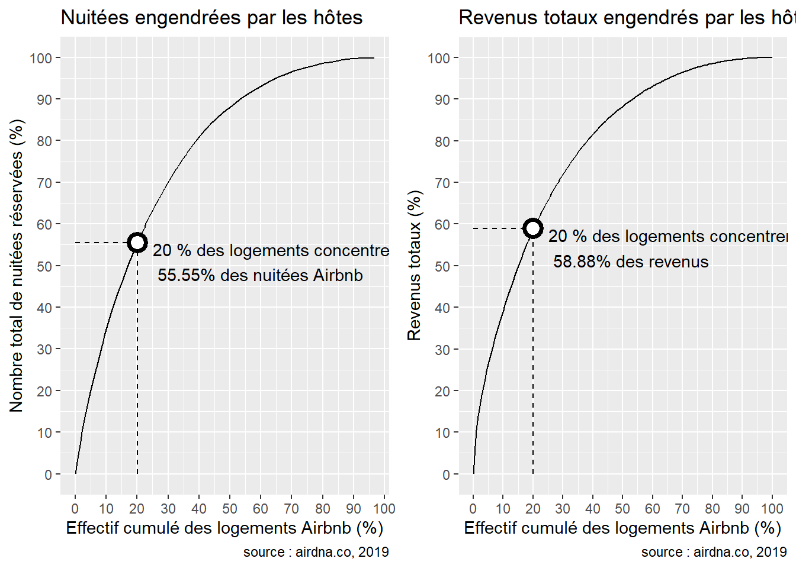
| Rang | Revenus en 2019 ($) | Nombre de logements |
|---|---|---|
| 1 | 59478 | 1 |
| 2 | 34347 | 1 |
| 3 | 30636 | 3 |
| 4 | 22632 | 1 |
| 5 | 22467 | 1 |
En regardant les hôtes qui engrangent le plus de revenus, on trouve un multiloueur qui a lui seul près de 59000$, soit 6.61% de la totalité des revenus engendrés par le marché Airbnb à bagneux en 2019. Sur les 5 hôtes engrangeant le plus de revenus, 4 sont monoloueurs.
L’arrêt de l’activité du marché Airbnb à bagneux s’observe tout d’abord au niveau du nombre de locations réservées : entre 2019 et 2020, elles ont subi une chute de 28%, passant de 179 à 129 unités. Les courbes ci-dessus montrent un déclin du nombre de nuitées réservées à partir de mars 2020, lors de la période de restriction des déplacements. En effet, on observe une chute moyenne de 40% du taux de fréquentation par logement de 2019 à 2020 Seul 18.7% des logements ont connu une hausse du nombre de leur visites entre 2019 et 2020 Enfin, l’arrêt du tourisme se ressent au niveau des revenus : ils sont passés de près de 900000$ en 2019 à 400000$ en 2020.
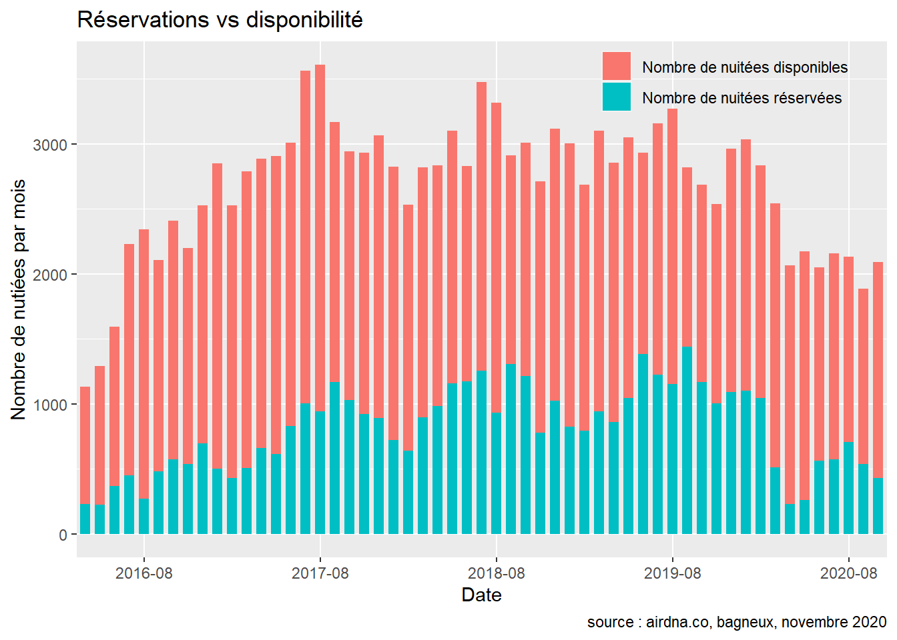
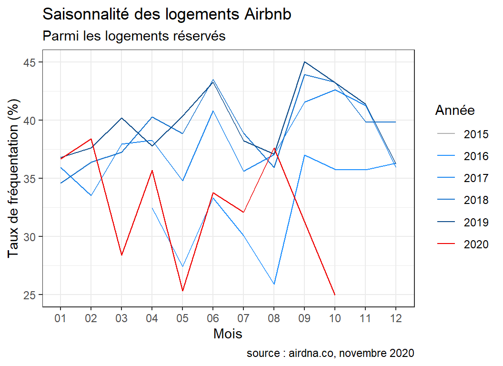
Les mois de juin et de septembre correspondent aux taux de fréquentation les plus élevés, tandis qu’août et novembre correspondent à des saisons creuses en raison du plus fort nombre de nuitées disponibles à ces périodes-là. Le comportement de l’année 2020 est complètement différent des autres années.
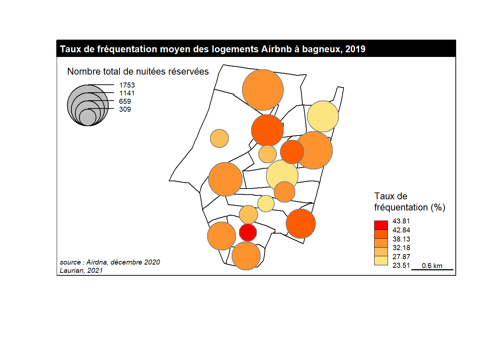
Source : Nombre de Logements (totaux) des communes d’Île-de-France (Donnée INSEE), 2017. https://data-iau-idf.opendata.arcgis.com/datasets/nombre-de-logements-totaux-des-communes-dîle-de-france-donnée-insee/explore↩︎
Source : capacité des communes en hébergements touristiques, INSEE base 2019 https://www.insee.fr/fr/statistiques/2021703↩︎
Source : Nombre de Logements (totaux) des communes d’Île-de-France (Donnée INSEE), 2017. https://data-iau-idf.opendata.arcgis.com/datasets/nombre-de-logements-totaux-des-communes-dîle-de-france-donnée-insee/explore↩︎
Source : capacité des communes en hébergements touristiques, INSEE base 2019 https://www.insee.fr/fr/statistiques/2021703↩︎
Source : Nombre de Logements (totaux) des communes d’Île-de-France (Donnée INSEE), 2017. https://data-iau-idf.opendata.arcgis.com/datasets/nombre-de-logements-totaux-des-communes-dîle-de-france-donnée-insee/explore↩︎
Source : capacité des communes en hébergements touristiques, INSEE base 2019 https://www.insee.fr/fr/statistiques/2021703↩︎